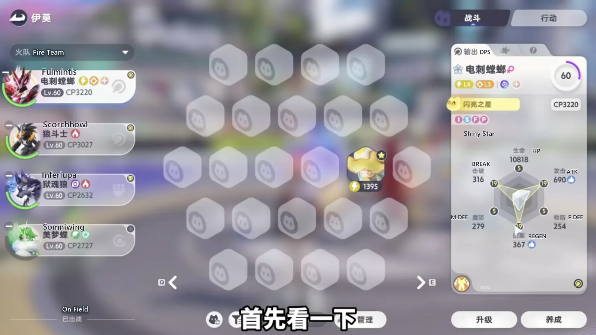
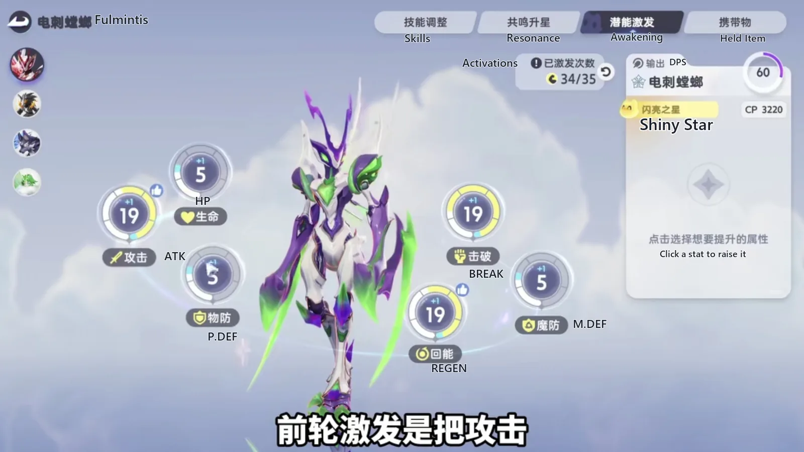
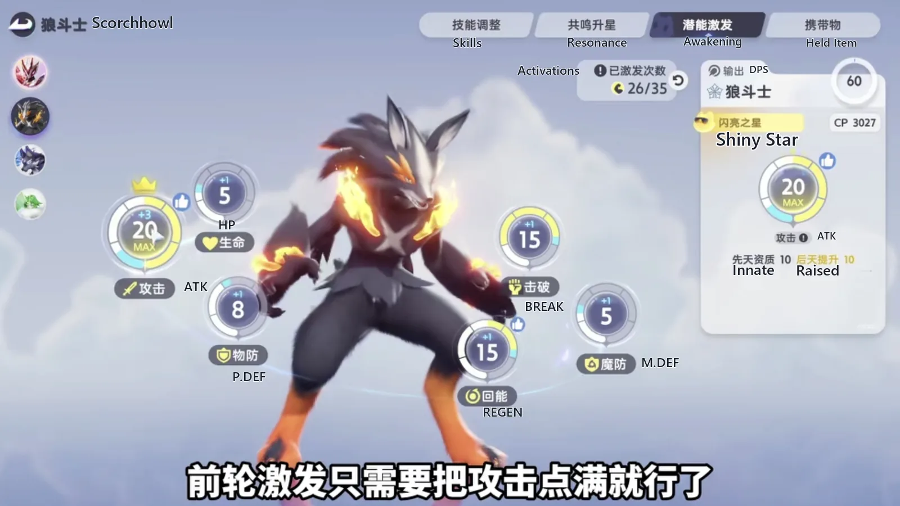
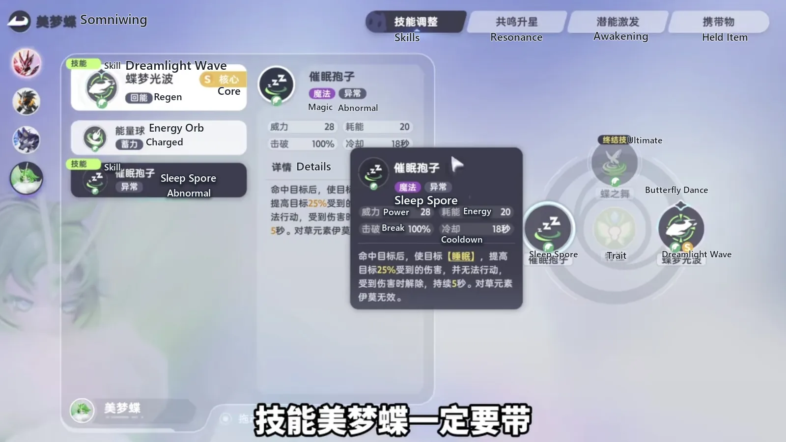
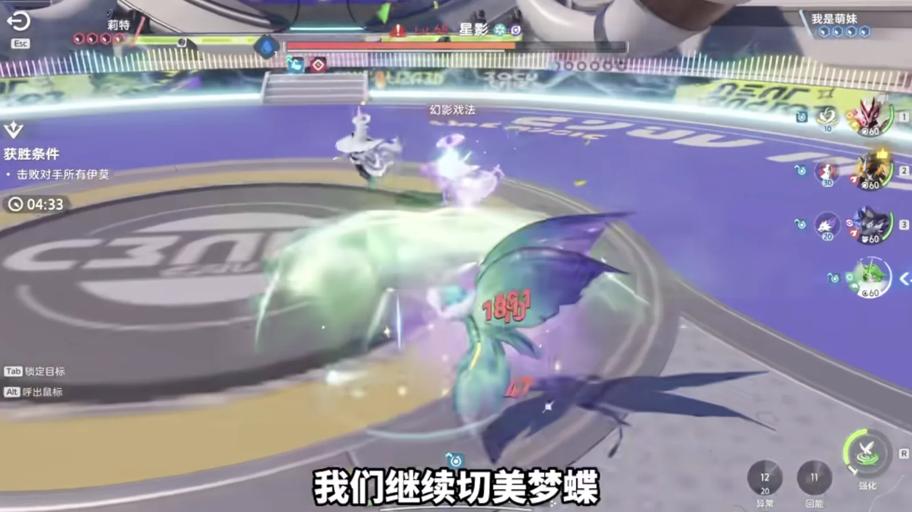
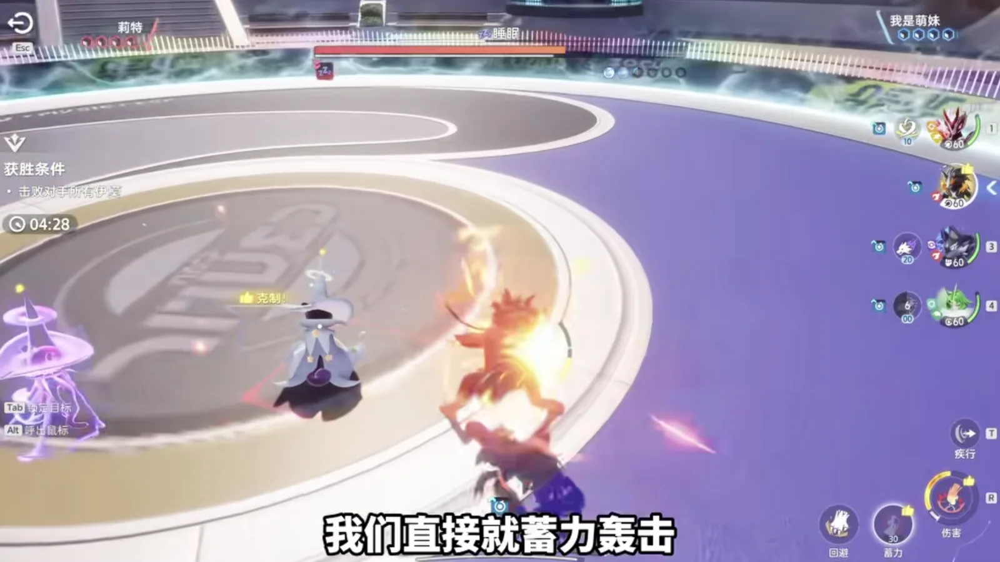
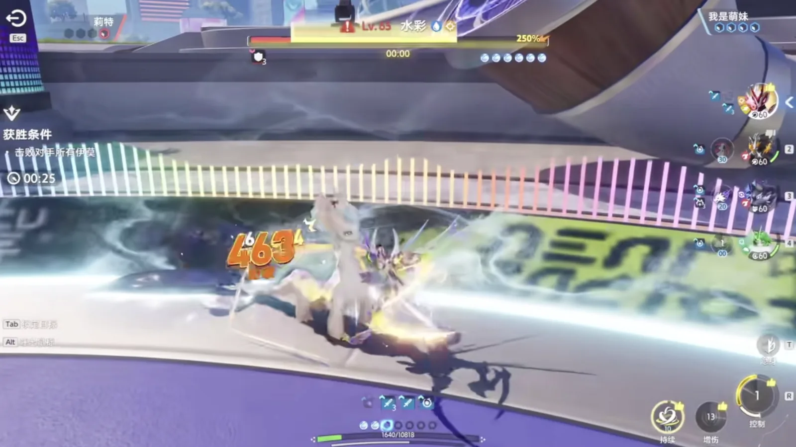

Home首页 / Guides攻略 / Aniimo's Lv.65 Lita Clear: Sleep the Switch, Then Let Two Carries Peel the Bar《伊莫》65 级莉特保姆级打法：先让他睡着，再让两个主 C 把血一层层剥掉
Checked核对于 October 21, 20262026 年 10 月 21 日
Aniimo's Lv.65 Lita Clear: Sleep the Switch, Then Let Two Carries Peel the Bar《伊莫》65 级莉特保姆级打法：先让他睡着，再让两个主 C 把血一层层剥掉
A four-Aniimo party for the level 65 Lita fight: which two do the damage, why the sleep has to land first, and the order to run the loop in.四只伊莫打 65 级莉特：哪两只负责输出、为什么一定要先睡着，以及这个循环按什么顺序跑。
Lita at level 65 is not a hard fight because of the health bar. It is hard because of the switching. Commit to an attack and the counter comes out — the one that beats what you are holding — and no lineup wins that trade straight up. This party eats the habit instead: Fulmintis plays the bait, Somniwing puts the switch to sleep, and Scorchhowl takes the free seconds. That is the whole loop. The job is to run it until every Aniimo on the other side has been spent.莉特这场仗的难点不在血量，在他换人的习惯。你一出招，他就切出克制你的那一只，正面硬刚谁都不顺。这套阵容反过来吃他这个习惯：让螳螂把他想切的那只钓出来，美梦蝶一发催眠按住，狼斗士再贴上去蓄力轰击。整场的循环就这几步，你要做的是把它重复到他手上几只伊莫全部交完。
The clear pays out 万象的经验, a large stack of experience, and this one is worth doing properly.打完能拿到万象的经验，这一场值得认真打。
The lineup: two carries and two enablers出战名单：两个主 C，两只打配合
Fulmintis (Lightning · DPS) is the first carry. The opening bait, the stretch in the middle and the finish all run through it.电刺螳螂（Fulmintis，电 · 输出）是第一个主 C。开场的勾引、中期的站场、最后的收尾，都靠它。
Scorchhowl (Fire · DPS) is the second. It only steps in for the few seconds the other side is asleep, and one charged hit off those seconds takes a long strip of health.狼斗士（Scorchhowl，火 · 输出）是第二个主 C。它只在对面睡着的那几秒上场，一次蓄力轰击就是一大条血。
Inferlupa (Fire · Dark · Break) is on the team for one opponent: Glynsera. It is not there to deal damage. Its job is to take the break gauge down so that Scorchhowl's hit lands on something soft.狱魂狼（Inferlupa，火 · 暗 · 击破）专门用来对付对面那只霜锋狼。它不需要打伤害，任务是把韧性拆掉，让狼斗士那一拳落得实。
Somniwing never enters the damage rotation. It does two things: sleep, and give Fulmintis its energy back. It is also not in our 86-species table — it is one of the game's two Legendary Aniimo, No. 030, and the site keeps it in the tier list instead.美梦蝶不进输出循环，它管两件事：催眠，和给螳螂回能量。它也不在本站的 86 只总表里 —— 它是游戏里的两只传说伊莫之一、图鉴第 30 号，站上把它记在强度榜上。
All four at level 60 before you go in. Drop one and the loop breaks.四只都练到 60 级再进。少一只，这套循环就断了。

Builds: 19 points on two of them, attack maxed on Scorchhowl培养：两只点到 19，狼斗士把攻击点满
Take Fulmintis to five stars, then put 19 points each into attack, break and energy regen in Capability Awakening. Held item: Heartseeker Pendant.电刺螳螂升到 5 颗星，潜能激发的攻击、击破、回能三项都点到 19 点，携带物带猎心吊坠。

Scorchhowl is five stars too, and its Awakening is simpler: max attack and stop there, with a few points into break and regen. Held item: Ferocious Fang. If you have the whole 爆裂 set, put it on — the damage goes up again.狼斗士也是 5 颗星，潜能激发只需要把攻击点满，击破和回能稍微点一点就够，携带物带猛兽之牙。手上有爆裂全套的话直接上全套，伤害会更高。

Inferlupa goes to four stars with 19 in break, the other nodes optional, and carries Gargantuan Horn. Somniwing goes to five stars, spends its Awakening on HP and energy regen, and carries Spirited Feather.狱魂狼点到 4 颗星，击破 19 点就行，其他位置可点可不点，携带物带巨兽之角。美梦蝶点到 5 颗星，潜能激发加生命和回能，携带物带蕴灵之羽。
No Fulmintis of your own? Ask a friend who bought the battle pass for one.手上没有电刺螳螂的话，找买了战令的好友要一只。
The sleep is the switch the whole fight turns on催眠孢子：整场仗的开关
One skill on Somniwing's bar is not optional: 催眠孢子. Put it on and leave it on. When it lands, a flower mark floats above the target's head — those are the only seconds in the fight where you get to attack without being punished. They are short, so every action inside them has to be decided before they start.美梦蝶的技能栏里，催眠孢子一定要带上。对面睡着以后头上会浮起一个花标，那几秒是你全场唯一能安稳输出的窗口。睡眠时间很短，所以这几秒里的每一个动作都得提前想好。

The fight opens with the bait, not with damage第一步不是输出，是勾引
Do not start by hitting. Send Fulmintis in and let the switch happen — the counter that comes out is Stellarys. The moment Stellarys is on the field, switch to Somniwing and land the sleep.开局别急着打伤害。先用螳螂上去，勾引对面切出星魔师。对面只要一切出星魔师，我们立刻换美梦蝶，催眠放出去。
The moment it is under, switch to Scorchhowl.对面睡着的那一刻我们马上切狼斗士。

While it sleeps, nothing but the charged hit睡着就蓄力轰击，别的都别按
The sleep is too short for a rotation, so Scorchhowl does exactly one thing inside it: the charged hit, and no other skill. That hit lands hard on its own, and a critical takes a whole block off the bar.睡眠太短，所以睡着的时候狼斗士只做一件事：蓄力轰击，不要放其他技能。这一拳砸下去伤害非常高，暴击出来更是直接掉一大块。
The next switch is always Glacy (Water · Ice · Heal). Same method — Fulmintis baits, Somniwing sleeps, and while you are in there remember to fire the energy skill — then Scorchhowl adds another charged hit. Follow it with the ultimate if it is up. Stellarys should die early: leave it alive and it keeps switching.对面接下来一定会切莹冰龙（Glacy，水 · 冰 · 治疗）。还是老办法，螳螂勾引，美梦蝶催眠（催眠的同时记得放回蓝），狼斗士再补一发轰击。有大招就接大招。星魔师（Stellarys，暗 · 输出）要尽早秒掉，留着它就会一直换人。

When Glynsera comes out, that is Inferlupa's job他放霜锋狼，就交给狱魂狼
Glynsera is the switch after that, and its damage is high — do not eat a hit from it. Bring Inferlupa in, use the ultimate to break Glynsera's gauge, then switch back to Scorchhowl for the charged hit and kill it fast. One clean pass through that is about a third of its health.之后他会放霜锋狼出来。这只狼的伤害非常高，千万不要被它打中。这时候换狱魂狼上场，用大招击破对面狼的韧性，再切狼斗士蓄力一击，尽快秒掉，一套技能基本能打掉三分之一血。
When it comes out again, put it to sleep again: Inferlupa breaks, Scorchhowl adds the hit. Three breaks and Glynsera is gone.他再放狼，我们就再切美梦蝶继续让它睡一轮：狱魂狼击破，狼斗士补一拳。三次击破下来，霜锋狼基本就没了。
The finish: break first, then open Light Blade收尾：先拆韧性，再开光刃
By now only Glacy and Sherro are left. Fulmintis can hold the field and close it out from here, but take their break gauge down before you start swinging — letting Inferlupa spend one round on it is the easy way.打到这儿只剩莹冰龙和星骑士。接下来就是电刺螳螂输出了，但动手之前先把它们的韧性打下来 —— 让狱魂狼先消耗一轮最省事。
When Sherro is down to its last bit of energy, open Light Blade and start the damage. Save the ultimate for after the shield breaks — that is where it lands. Fulmintis's Q, 尾刃, wants to go out on the break as well; that one hit is worth waiting for.星骑士只剩一点能量时，直接开光刃开始输出。大招一定要在它破盾之后放，那一下伤害非常爆炸。螳螂 Q 技能的尾刃也要卡在它破韧的那一下打出去，这一刀的伤害很高。
With Sherro nearly dead, Glacy will come out to save it. Force the switch back to Sherro. Sherro is on a sliver at that point, so finish it outright — and Fulmintis has the element advantage on it.星骑士还差一点血的时候莹冰龙会出来，那就逼它切回星骑士。这时候星骑士只剩一丝血，直接强杀，螳螂打它还有克制关系。
Then it is Glacy alone with 55 seconds left. Use Somniwing to give Fulmintis its energy back and slip Inferlupa in for one break; when the gauge is down to almost nothing, refill once more, set Fulmintis up for the last burst, and one rotation takes it. You walk out with 20-odd seconds still on the clock.最后只剩莹冰龙，场上还有 55 秒。用美梦蝶给螳螂回能量，顺手切狱魂狼击破一手；等莹冰龙的韧性只剩一点点，再切一次美梦蝶补能量，螳螂准备最后一波爆发，一套输出直接带走，打完还剩 20 多秒。

One last thing写在最后
The opening bait is not wasted motion. Every switch is a window left open for you; what you are doing is making the switch happen on your terms — pull the Aniimo you want onto the field, then take the sleep window off it.开局的勾引不是多余动作。他每次换人都给你留了一个空当，你要做的是让他按你的节奏换 —— 把他引到你想打的那只身上，再把睡眠窗口拿下来。
Two things cannot be skipped. The sleep cannot break — the moment it does, they go back to switching in your face. And do not open Light Blade before the gauge is down, or most of the damage is eaten. Make those two fixed actions and what is left is the loop: bait, sleep, hit; bait, sleep, hit.两件事不能省：催眠不能断，一断他就在你面前继续换人；韧性没拆干净之前不要开光刃，伤害会被吃掉大半。把这两件做成固定动作，剩下的就是循环：引、睡、轰击，再引、再睡、再轰击。
More guides相关攻略
- Aniimo's Strongest Electric Team: Three of the Four Are There to Set Up Fulmintis《伊莫》最强电系阵容，四只里三只都在给电刺螳螂铺路 — A four-Aniimo Electric party built around one damage dealer: what each of the other three does before Fulmintis comes in, and the order to switch them in.一套四只的电系阵容，全部围绕一个输出位搭：电刺螳螂进场之前，另外三只各自负责什么，以及换人的顺序。
- Aniimo Tier List: The 19 Creatures to Build First《伊莫》强度巅峰榜：几百小时之后，新手先练这 19 只 — A personal tier list of 19 Aniimo, grouped by the job each one does — damage, break, healing and support, energy regen — with every element and role checked against the official wiki and the ranking left as my own.一份个人向的强度榜单，按输出、击破、治疗辅助、回能分成四组。每只都逐一对过官方维基的属性与定位，哪一段是能查的、哪一段是我自己的判断，文中分开写。